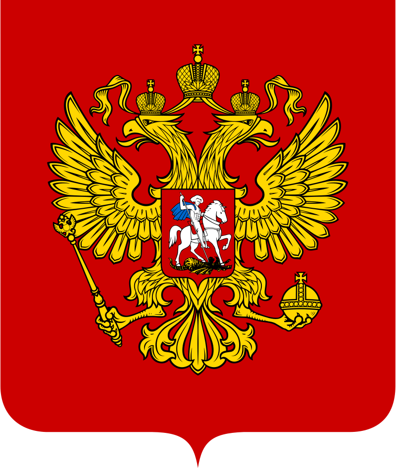
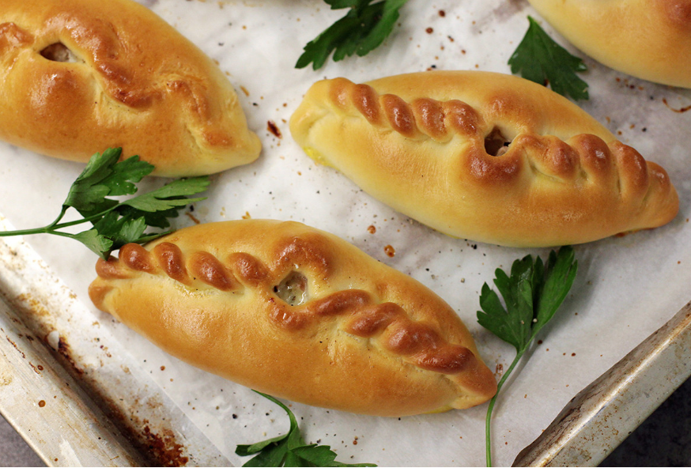

Fish Rasstegai


Originating from the era of Imperial Russia, it's a dish considered as popular as back then! With the shape of a pie "unbuttoned", it contains fish (or other meats) onions, and many seasonings. You can also stuff it with vegetables and potatoes!
Ingredients
- Wheat Flour: 330g
- Milk: 200 mL
- Vegetable Oil: 2 tablespoons
- Dry Yeast: 1 teaspoon
- Sugar: 1 tablespoon
- Salt: 1 teaspoon
- Salmon, Trout, OR Humpback Salmon: 450 g
- Onions: 2
- Oil, for frying
- Salt, for seasoning
- Ground Pepper, for seasoning
- Egg, for smearing: 1 or more
Dough
Filling
Steps
- Prepare the dough. Mix together flour, eggs and water or milk and knead into a dough, softer than noodle dough. Knead until the dough becomes smooth, elastic, and does not stick to hands and the kneading board. If you cut the dough in two, its inside should be thick without any holes.
- Then form a round loaf and cover it to prevent it from drying. Let it rest for at least half an hour. Then thinly roll the rested dough.
- Add salt and fat (greaves, lard, fried bacon) to the mashed potato. Then add fried onions, herbs and spices (marjoram, chives, pepper and salt). Well mix together all ingredients and quickly knead into a soft mixture. The filling must not be crumbly, therefore you should add fat, if necessary. Shape the filling into even balls the size of hazelnuts and place them on the dough.
- Place the balls of filling on rolled dough with sufficient space between them (one finger apart). Cut the dough between the balls horizontally and vertically. Then fold the dough over and press down between the balls of filling, forming “ears”.
- In the top of each individual žlikrof make a little hollow, so that the dough does not tear. Thus Idrija žlikrofi get their characteristic hat shape. Typical Idrija žlikrof size: 3 cm in length and 2 cm in height – height is measured at the centre, while the ends are slightly higher.
- Put žlikrofi in boiling salted water, stir and cover. When they float to the surface and the water starts boiling again, they are cooked. Take them from the hot water and serve immediately.
Source: Fish Rasstegai